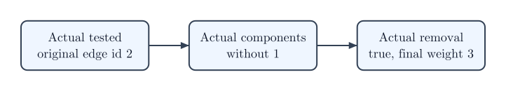
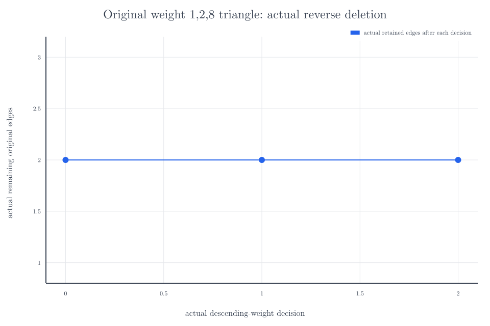
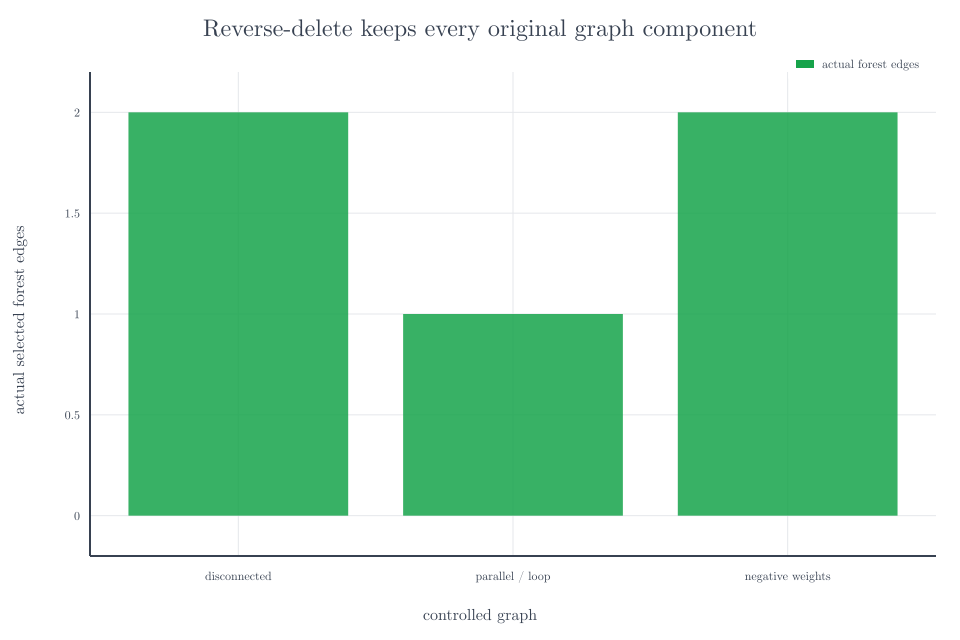
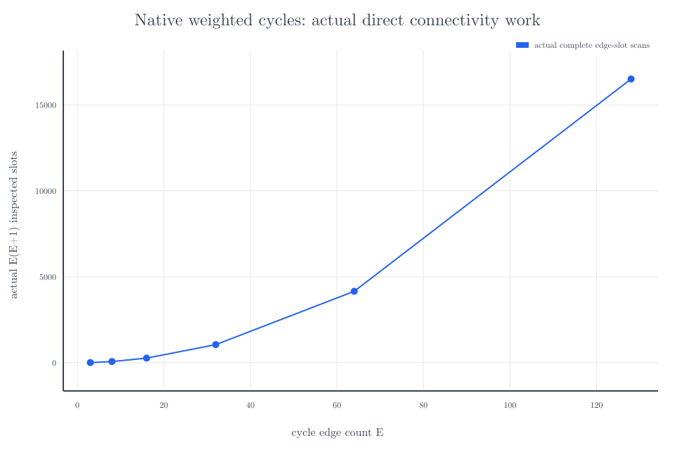

Reverse-delete forests: actual connectivity decisions and retained edge identities
Abstract
Given a weighted undirected graph, find minimum-total-weight edges that connect every original component without cycles. Reverse-delete scans weighted edges from heaviest to lightest and removes an edge only when the number of connected components is preserved. Actual native omission decisions retain caller edge identities, including parallel edges and self-loops. The original weight1,2,8 triangle remains the central worked input.
Mechanism and mathematical scope
The invariant is that the retained graph spans each original connected component. If omitting an edge preserves the component count, that edge lies on a retained cycle. The cycle property permits deleting a maximum-weight cycle edge while preserving some minimum forest. Processing weights in descending order therefore leaves a minimum spanning forest. This implementation recomputes connectivity with disjoint sets for each omission. It inspects all E edge slots in the initial pass and every deletion pass:
Including vertex initialization, work is O(E log E+(E+1)*(V+E alpha(V))). This is a direct checked implementation, not a dynamic-connectivity data structure.
A tiny actual producing history
The table and native concept diagram read the same producing execution. Every block below is a complete editable C++ program.
#include <dm/dm.hpp>
int main() {
namespace a = dm::algorithms;
namespace g = dm::graphics;
std::filesystem::create_directories("build");
const std::vector<a::WeightedEdge> e{{0, 1, 1}, {1, 2, 2}, {0, 2, 8}};
auto t = a::reverse_delete_trace(3, e);
const auto &s = t.steps[0];
std::print("| actual original edge id | components without | removed | actual kept mask |\n| ---: | " "---: | --- | --- |\n");
for (const auto &v : t.steps) {
const std::vector<int> retained(v.kept.begin(), v.kept.end());
std::print("| {} | {} | {} | `{}` |\n", v.edge_index,
v.components_without, v.removed, retained);
}
g::Diagram d(48, 1100);
d.node("n0", {0, 0},
std::format("Actual tested original edge id {}", s.edge_index));
d.node("n1", {5, 0},
std::format("Actual components without {}", s.components_without));
d.node("n2", {10, 0},
std::format("Actual removal {}, final weight {}", s.removed,
t.forest.total_weight));
d.edge("n0", "n1").edge("n1", "n2");
d.save_svg("build/reverse_delete_tiny.svg");
}| actual original edge id | components without | removed | actual kept mask |
|---|---|---|---|
| 2 | 1 | true | [1, 1, 0] |
| 1 | 2 | false | [1, 1, 0] |
| 0 | 2 | false | [1, 1, 0] |

The retained original experiment
#include <dm/dm.hpp>
int main() {
namespace a = dm::algorithms;
namespace g = dm::graphics;
std::filesystem::create_directories("build");
const std::vector<a::WeightedEdge> edges{{0, 1, 1}, {1, 2, 2}, {0, 2, 8}};
auto t = a::reverse_delete_trace(3, edges);
std::print("Original triangle: actual forest weight {}, connected {}, retained edges {}.\n\n| actual " "processing order | original edge id | weight | kept after its decision | components without " "|\n| ---: | ---: | ---: | --- | ---: |\n",
t.forest.total_weight, t.forest.is_connected, t.forest.edges);
std::vector<double> x, y;
for (std::size_t i = 0; i < t.steps.size(); ++i) {
const auto &s = t.steps[i];
std::print("| {} | {} | {} | {} | {} |\n", i, s.edge_index,
std::get<2>(edges[s.edge_index]), !s.removed,
s.components_without);
x.push_back(i);
y.push_back(std::count(s.kept.begin(), s.kept.end(), char{1}));
}
auto p = g::RPlot::create();
p.lines(x, y, "actual retained edges after each decision", {37, 99, 235}).points(x, y, {37, 99, 235}, 6).title("Original weight 1,2,8 triangle: actual reverse deletion").x_label("actual descending-weight decision").y_label("actual remaining original edges");
p.save_svg("build/reverse_delete_original.svg");
}Original triangle: actual forest weight 3, connected true, retained edges [(1, 2, 2), (0, 1, 1)].
| actual processing order | original edge id | weight | kept after its decision | components without |
|---|---|---|---|---|
| 0 | 2 | 8 | false | 1 |
| 1 | 1 | 2 | true | 2 |
| 2 | 0 | 1 | true | 2 |

Explicit controls
#include <dm/dm.hpp>
int main() {
namespace a = dm::algorithms;
namespace g = dm::graphics;
std::filesystem::create_directories("build");
const std::vector<std::vector<a::WeightedEdge>> models{
{{0, 1, 1}, {2, 3, 2}}, {{0, 1, 2}, {0, 1, 1}, {0, 0, -100}},
{{0, 1, -3}, {1, 2, -2}, {0, 2, 4}}
};
std::vector<double> x, y;
std::vector<std::string> labels{"disconnected", "parallel / loop",
"negative weights"};
std::print("| control | original components | actual forest edges | actual total | connected |\n| --- | " "---: | ---: | ---: | --- |\n");
for (std::size_t i = 0; i < models.size(); ++i) {
auto t = a::reverse_delete_run(i == 0 ? 4 : 3, models[i]);
std::print("| {} | {} | {} | {} | {} |\n", labels[i],
t.initial_components, t.forest.edges.size(),
t.forest.total_weight, t.forest.is_connected);
x.push_back(i);
y.push_back(t.forest.edges.size());
}
bool bad = false;
try {
a::reverse_delete(2, {{0, 2, 1}});
} catch (const std::invalid_argument &) {
bad = true;
}
std::print("Invalid endpoint rejected: {}.\n", bad);
if (!bad)
return 1;
auto p = g::RPlot::create();
p.bars(x, y, "actual forest edges", {22, 163, 74}, .8).x_ticks(x, labels).title("Reverse-delete keeps every original graph component").x_label("controlled graph").y_label("actual selected forest edges");
p.save_svg("build/reverse_delete_controls.svg");
}| control | original components | actual forest edges | actual total | connected |
|---|---|---|---|---|
| disconnected | 2 | 2 | 3 | false |
| parallel / loop | 2 | 1 | 1 | false |
| negative weights | 1 | 2 | -5 | true |
Invalid endpoint rejected: true.

Actual selected work and sensitivity
#include <dm/dm.hpp>
int main() {
namespace a = dm::algorithms;
namespace g = dm::graphics;
std::filesystem::create_directories("build");
std::vector<double> x, y;
std::print("| cycle vertices / edges | actual connectivity passes | actual edge-slot visits | selected " "edges | actual forest weight |\n| ---: | ---: | ---: | ---: | ---: |\n");
for (std::size_t n : {3, 8, 16, 32, 64, 128}) {
auto t = a::reverse_delete_run(n, a::reverse_delete_cycle(n));
std::print("| {} | {} | {} | {} | {} |\n", n, t.connectivity_passes,
t.edge_visits, t.forest.edges.size(), t.forest.total_weight);
x.push_back(n);
y.push_back(t.edge_visits);
}
auto p = g::RPlot::create();
p.lines(x, y, "actual complete edge-slot scans", {37, 99, 235}).points(
x, y, {37, 99, 235}, 5).title("Native weighted cycles: actual direct connectivity work").x_label("cycle edge count E").y_label("actual E(E+1) inspected slots");
p.save_svg("build/reverse_delete_work.svg");
}| cycle vertices / edges | actual connectivity passes | actual edge-slot visits | selected edges | actual forest weight |
|---|---|---|---|---|
| 3 | 4 | 12 | 2 | 3 |
| 8 | 9 | 72 | 7 | 28 |
| 16 | 17 | 272 | 15 | 120 |
| 32 | 33 | 1056 | 31 | 496 |
| 64 | 65 | 4160 | 63 | 2016 |
| 128 | 129 | 16512 | 127 | 8128 |

API and interpretation
The result is a forest of all original components, not just the component containing vertex0. Finite negative weights, self-loops and parallel edge identities are supported. Equal weights use an explicit input-id tie rule; another valid minimum forest can have different equal-weight edges. Edge-slot counters exclude sorting, vertex initialization and disjoint-set internal operations.
Reusable producers, fixtures and histories live in the canonical C++ library. Captured records own their values and do not come from a separate report replay. Selected counters and record/scalar policies are specified at their API boundaries; they are not peak-byte or wall-time budgets. Synthetic structural inputs are controlled fixtures for these mechanisms.
References
Verification: 133 scoped native cases;20 directly instrumented ASan/UBSan
cases;85 executable public examples;343/343 full-file definitions;10 hovers;1263
independent records/220175 checks;frozen compatibility across all ten
families;11 checkout/installed standalone headers and linked consumer;40
executed programs and40 inspected figures with both exports. Receipts:
build/mepml-conversion/batch-324-333/.